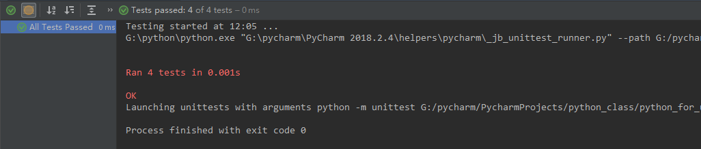

unittest模块是Python自带的一个单元测试模块，我们可以用来做单元测试。unittest模块包含了如下几个子模块：
首先编写一个简单的加减乘除数学方法类：
class MathCalculate:
'''
加减乘除的计算类
'''
def __init__(self, first_num, second_num):
self.first_num = first_num
self.second_num = second_num
def add(self):
'''
加法
:return:
'''
return self.first_num + self.second_num
def subtract(self):
'''
减法
:return:
'''
return self.first_num - self.second_num
def multiply(self):
'''
乘法
:return:
'''
return self.first_num * self.second_num
def divide(self):
'''
除法
:return:
'''
try:
return round(self.first_num / self.second_num, 2)
except ZeroDivisionError:
return '∞'接下来我们利用unittest中的TestCase类来编写测试用例，编写之前，要先知道TestCase类以及类方法的用法：
新建一个模块，编写一个简单的测试用例类：
import unittest
from python_for_unittest_testsuite.MathCalculate import MathCalculate as MC
class TestMathCalculate(unittest.TestCase):
'''
测试加减乘除类
'''
def test_add(self):
actual = MC(1, 1).add()
self.assertEqual(2, actual, msg='两数相加测试失败')
def test_subtract(self):
actual = MC(1, 1).subtract()
self.assertEqual(0, actual, msg='两数相减测试失败')
def test_multiply(self):
actual = MC(1, 1).multiply()
self.assertEqual(1, actual, msg='两数相乘测试失败')
def test_divide(self):
actual = MC(1, 1).divide()
self.assertEqual(1, actual, msg='两数相除测试失败')
if __name__ == '__main__':
unittest.main()我们运行代码之后，得到如下结果：

但是这样远远达不到我们的要求，还需要继续优化，接下来进入正题......
上面我们看到的是利用unittest.main()执行所有的用例，但是有的时候我们不需要执行所有的测试用例，并且可以按照自己的需求去添加用例，这时我们就要使用TestSuite来帮助我们更好地去实现单元测试
方法一：加载测试用例，直接使用addTest()方法添加测试用例，代码示范如下：
import unittest
from python_for_unittest_testsuite.test_math_calculate import TestMathCalculate
suite = unittest.TestSuite()
# 增加一条用例 addTest()方法传入：类名(测试方法名)
suite.addTest(TestMathCalculate('test_add'))
suite.addTest(TestMathCalculate('test_subtract'))
suite.addTest(TestMathCalculate('test_multiply'))
suite.addTest(TestMathCalculate('test_divide'))
# 上下文管理器，生成测试报告
with open('test_math.txt', mode='w+', encoding='utf-8') as f:
runner = unittest.TextTestRunner(f, 'text', 2)
runner.run(suite)方法二：加载测试类，通过TestLoader里面的loadTestsFromTestCase来加载测试类，代码示范如下：
import unittest
from python_for_unittest_testsuite.test_math_calculate import TestMathCalculate
suite = unittest.TestSuite()
loader = unittest.TestLoader()
# 加载测试类
suite.addTest(loader.loadTestsFromTestCase(TestMathCalculate))
# 上下文管理器，生成测试报告
with open('test_math.txt', mode='w+', encoding='utf-8') as f:
runner = unittest.TextTestRunner(f, 'text', 2)
runner.run(suite)方法三：加载测试模块，通过TestLoader里面的loadTestsFromModule来加载测试类，代码示范如下：
import unittest
from python_for_unittest_testsuite import test_math_calculate
suite = unittest.TestSuite()
loader = unittest.TestLoader()
# 加载测试模块
suite.addTest(loader.loadTestsFromModule(test_math_calculate))
# 上下文管理器，生成测试报告
with open('test_math.txt', mode='w+', encoding='utf-8') as f:
runner = unittest.TextTestRunner(f, 'text', 2)
runner.run(suite)方法四：自动搜寻测试用例，根据传入的测试模块的所属目录路径自动去查找测试用例，代码示范如下：
import unittest
# 根据传入的测试模块的所属目录路径自动去查找
suite = unittest.defaultTestLoader.discover("G:\pycharm\PycharmProjects\python_class\python_for_unittest_testsuite")
# 上下文管理器，生成测试报告
with open('test_math.txt', mode='w+', encoding='utf-8') as f:
runner = unittest.TextTestRunner(f, 'text', 2)
runner.run(suite)